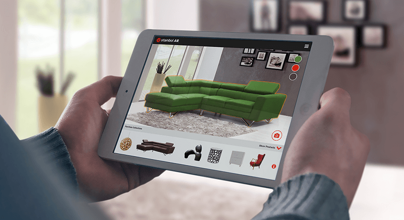
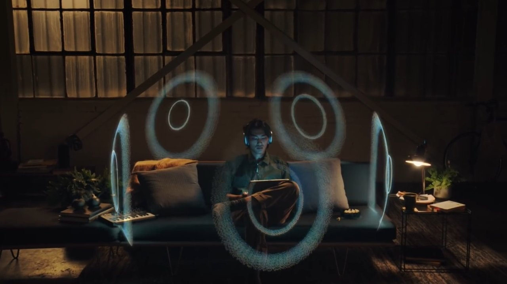
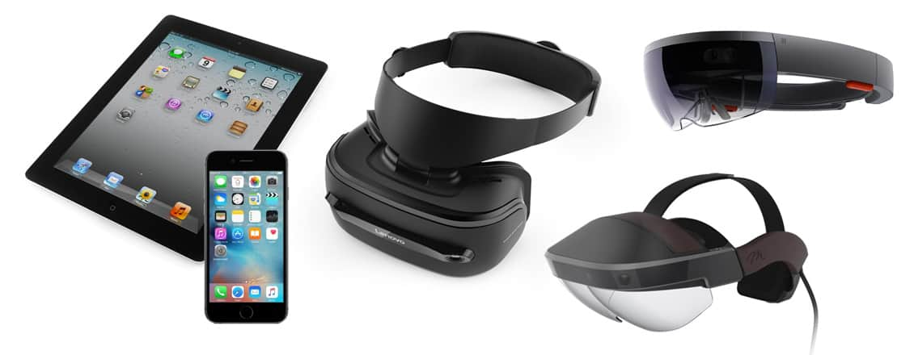

Augmented
REALITY

What is Augmented Reality?
According to Hayes and Downie (2024), Augmented reality (AR) refers to the real-time integration of digital information into a user’s environment. AR technology overlays content onto the real world, enriching a user’s perception of reality rather than replacing it. AR devices are equipped with cameras, sensors and displays. This can include smartphones and tablets creating mobile AR experiences or ‘wearables’ like smart glasses and headsets. These devices capture the physical world and then integrate digital content (for example, 3D models, images or videos) into the scene, blending digital and virtual worlds.
Example of
Augmented Reality (AR)

Evolution
Reference Link: https://www.verdict.co.uk/augmented-reality-timeline/
Reference image taken from virtual speech
A timeline of key milestones in Augmented Reality, showcasing its evolution from early innovations to modern breakthroughs.
1968
Ivan Sutherland created the first head-mounted display (HMD), which provided basic 3D graphics but was heavy and tethered, earning the name "Sword of Damocles" due to its unstable nature.
1975
Myron Krueger’s Videoplace used interactive video to create virtual environments where users could engage with computer-generated objects in real-time, a precursor to modern AR/VR systems.
1990
Thomas Caudell coined "augmented reality" when describing a system that helped Boeing workers by overlaying virtual guidance onto physical objects during aircraft assembly.
1992
The US Air Force developed an immersive AR system for pilot training, where digital overlays were combined with live video to enhance situational awareness.
1994
Julie Martin introduced "Dancing in Cyberspace," the first AR theater production, blending live dance with virtual imagery projected in real-time, creating an immersive experience.
1998
NASA incorporated AR into its X-38 spacecraft for field navigation, helping astronauts visualize key information directly in their view to improve mission efficiency.
2000
ARQuake, created in 2000, was the first outdoor mobile AR game, blending real-world environments with virtual gaming elements using GPS and AR technology.
2005
Nokia introduced AR Tennis in 2005, an innovative two-player AR game that used a mobile phone’s camera to superimpose virtual tennis elements onto the real world.
2008
BMW utilized AR technology in 2008 for print advertisements, allowing users to scan an image with their phone to view a 3D model of a car, blending physical and virtual worlds.
2009
ARToolkit, introduced in 2009, was a tool that allowed developers to create AR experiences using a webcam, enabling more accessible AR development for web and mobile platforms.
2010
In 2010, Microsoft introduced the Kinect, a motion-sensing device that used cameras and depth sensors to capture users' movements, influencing both gaming and AR applications.
2013
Volkswagen’s MARTA, launched in 2013, used AR to assist service technicians by overlaying digital maintenance instructions on the physical car parts they were working on.
2013
In 2013, Google began selling prototypes of Google Glass, a wearable AR headset that displayed information directly in the user’s field of vision, pioneering wearable AR technology.
2014
Google launched Tango in 2014, an AR platform designed to enable devices to map and understand the environment in 3D, enhancing mobile AR experiences.
2015
In 2015, Microsoft revealed the HoloLens, a mixed-reality headset that combined AR with holographic projections, enabling users to interact with digital content in the real world.
2016
Pokémon Go, launched in 2016, became a global phenomenon by combining AR with GPS technology, allowing players to catch virtual Pokémon in real-world locations.
2016
Snap introduced Spectacles in 2016, smartglasses that allowed users to capture short videos and photos, merging AR and social media functions.
2017
In 2017, Apple released ARKit, a software development kit for creating AR experiences on iOS devices, boosting mobile AR app development.
2017
Facebook launched Spark AR in 2017, allowing developers to create AR filters and effects for use on Facebook and Instagram.
2018
In 2018, Google released ARCore, a platform for building AR apps on Android devices, providing features like motion tracking and environmental understanding.
2018
Magic Leap released the Magic Leap One in 2018, a mixed-reality headset aimed at bringing AR experiences to the mainstream with advanced spatial computing.
2019
Microsoft’s Hololens 2, released in 2019, improved upon its predecessor by offering better comfort, field of view, and gesture recognition, becoming a key tool in enterprise AR applications.
2022
Apple’s long-rumored AR headset was expected to be released in 2022, with the company planning to expand into AR smart glasses in the following years.
2025
By 2025, AR cloud technology, which allows for persistent AR experiences across devices, is expected to thrive, with 5G networks providing the speed and reliability needed for real-time interaction.

Hardware
AR hardware consists of devices like head-mounted displays, smart glasses, cameras, and sensors that overlay digital content onto the real world for interactive experiences.
Specific key components of the hardware is discussed below.
Information taken from https://encyclopedia.pub/entry/39656
https://www.sciencedirect.com/science/article
Display and Resolution
One of the most important features of AR/VR hardware is the display and resolution. The display is the device that shows the digital content to the user, such as a smartphone screen, a headset, or a projector. The resolution is the number of pixels that the display can produce, which affects the sharpness and clarity of the image. Higher resolution displays can create more realistic and immersive visuals, but they also require more processing power and battery life. AR/VR developers need to balance the display and resolution features with the hardware capabilities and user preferences.
Tracking and Sensors
Another key feature of AR/VR hardware is the tracking and sensors. The tracking system measures the position and orientation of the user and the display, updating the digital content accordingly. The sensors are the devices that collect the data for tracking, such as cameras, gyroscopes, accelerometers, or GPS. Tracking and sensors enable AR/VR applications to respond to the user's movements and actions, creating a sense of presence and interaction. AR/VR developers need to choose the appropriate tracking and sensor features for the type and scope of the application, ensuring their accuracy and reliability.

Audio and Haptics
A third key feature of AR/VR hardware is the audio and haptics. Audio refers to the sound accompanying the digital content, such as music, speech, or sound effects. Haptics refers to the feedback that simulates the touch and feel of the digital content, such as vibrations, pressure, or temperature. Audio and haptics enhance the realism and immersion of AR/VR applications, providing additional information and cues to the user. AR/VR developers need to design the audio and haptics features to match the visual content and the user's expectations, while avoiding noise and interference.

User Interface and Interaction
A critical feature of AR/VR software is the user interface and interaction. The user interface allows the user to control and communicate with the AR/VR application, such as through menus, buttons, or gestures. Interaction refers to how the user interacts with the digital content, such as picking, dragging, or throwing objects. The user interface and interaction influence the usability, accessibility, and user engagement of the AR/VR application. AR/VR developers must design interfaces and interactions that are intuitive and natural, providing feedback and guidance to the user.
Input Systems
Augmented Reality (AR) relies on various input devices to enable interaction with virtual content. One key device is Pinch Gloves, which are stretch-fabric gloves equipped with sensors on each fingertip to detect hand movements and gestures, allowing users to interact with virtual objects. Handheld Devices such as smartphones, PDAs, and tablets are also commonly used in AR, as they incorporate cameras, digital compasses, and GPS sensors to track movement and orientation. Additionally, AR systems utilize other tracking technologies, including digital cameras and optical sensors to capture the real-world environment for overlaying AR content, accelerometers and gyroscopes to measure movement and rotation, GPS for location-based AR applications, and RFID or wireless sensors for tracking user or object positioning. These devices work together to provide immersive and interactive AR experiences.
